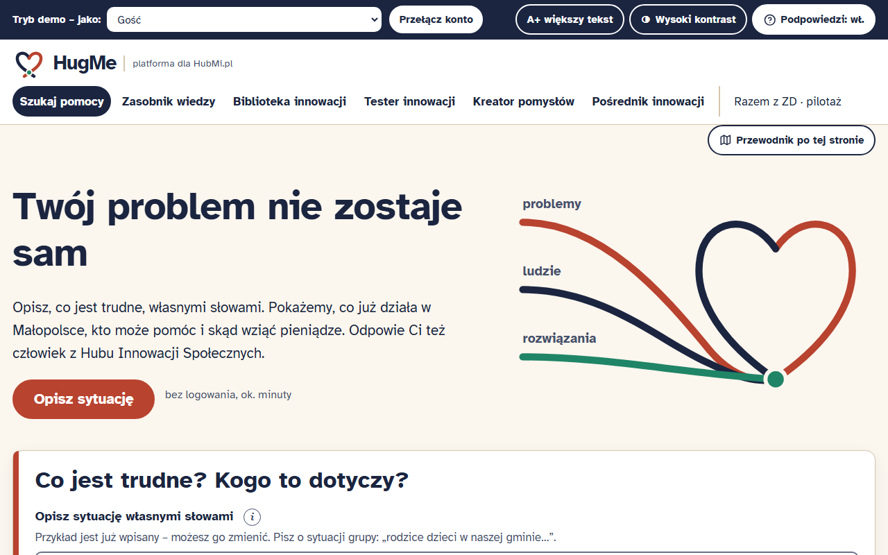
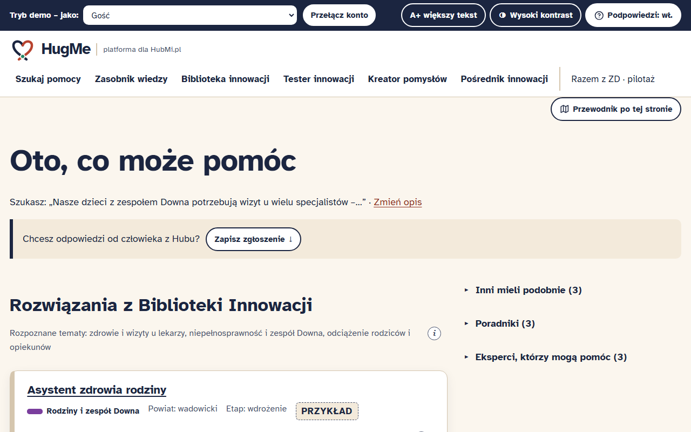
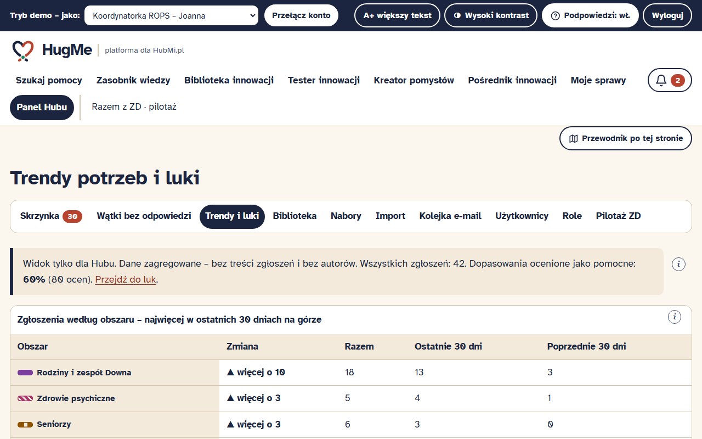
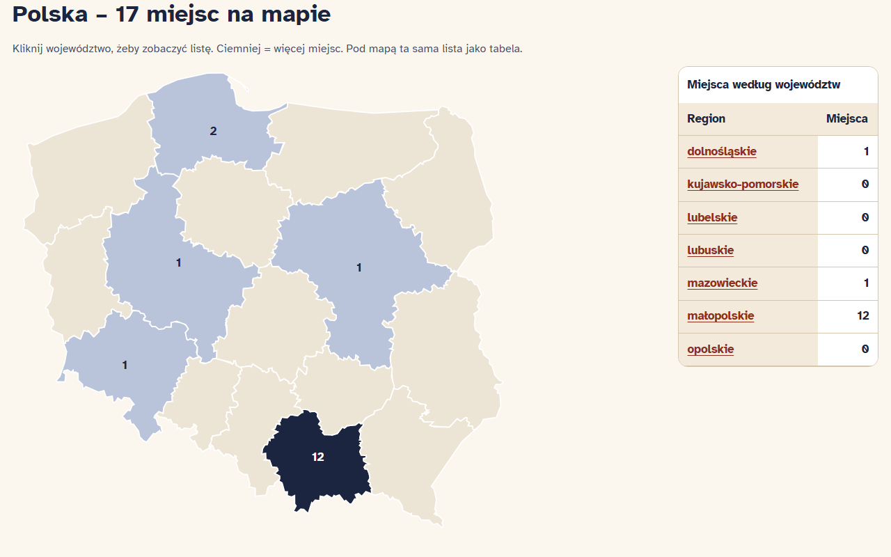

HackYeah 2026 · zadanie HubMi.pl · ROPS Kraków
platforma dla HubMi.pl
Twój problem nie zostaje sam.
Hub + Mi(łopolska) czyta się jak hug me – „przytul mnie”. Mieszkaniec z problemem nie trafia do urzędu, tylko do kogoś, kto go obejmuje i łączy z rozwiązaniem i ludźmi.
Demo: hugme.twapp.pl · Kod: github.com/TomaszWu14/hugme · konta demo bez haseł
Problem
obszarów wyzwań Małopolski – pilotaż: rodziny osób z zespołem Downa
wskaźnik zatrudnienia osób z niepełnosprawnością (II kw. 2024) – o blisko 50 pkt. mniej niż osób sprawnych
Źródło: GUS BAEL, niepelnosprawni.gov.pl
Rozwiązanie

Matchmaking (moduł obowiązkowy)
✦ AI (Claude Haiku) działa w demo, ale tylko wzbogaca – zawsze oznaczone, z dziennym limitem; bez AI wszystko działa.

Wszystkie moduły z briefu
Na starcie kafle „7 modułów HubMi” · 5 ról demo · API JSON · 313 testów automatycznych (ścieżki, role, CSRF, prywatność)
Dla Hubu Innowacji Społecznych

Pilotaż – tu włożyłem najwięcej pracy

Dostępność i prywatność
widoków bez naruszeń WCAG 2.1 AA wykrywanych automatycznie (axe-core) – desktop i telefon 320 px, audyt w CI
rodzajów danych osobowych maskowanych przed zapisem i przed AI: PESEL, telefon, e-mail, adres, kod, imię dziecka, nazwisko lekarza
Wszystkie dane są fikcyjne i oznaczone jako „PRZYKŁAD”. CSRF, CSP bez zewnętrznych skryptów, role sprawdzane na serwerze.
Potencjał wdrożeniowy
| Pozycja | Miesięcznie (pilotaż) |
|---|---|
| Hosting: 1 kontener Docker, Coolify na VPS Hetzner | ok. 50 zł |
| AI – Claude Haiku (ok. 2 500 użyć) | ok. 25 zł · wariant bez AI: 0 zł, pełna funkcjonalność |
| Koordynator/ka Hubu + moderacja | 1–1,5 etatu – to tu jest prawdziwa wartość |
Python + Flask, 3 zależności, bez frameworka JS · SQLite → PostgreSQL · import Biblioteki ROPS · API dla bazy grantowej · docelowo logowanie przez login.gov.pl.
Co dalej